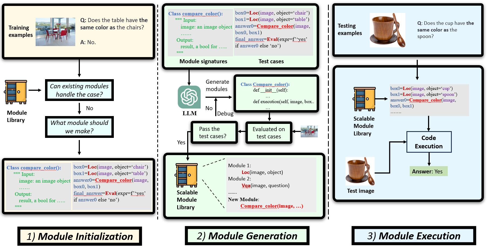
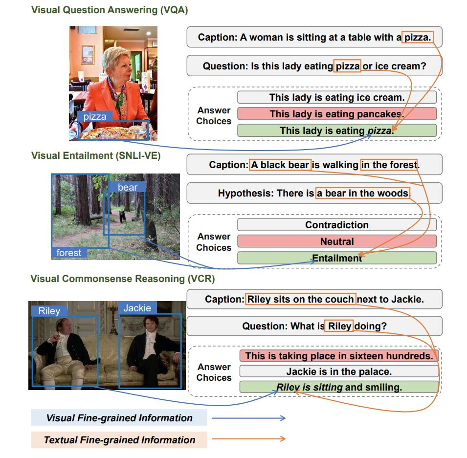
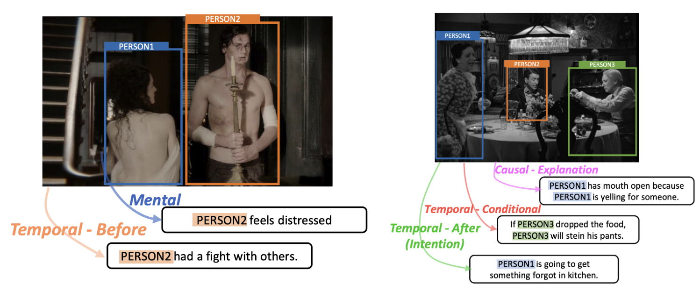
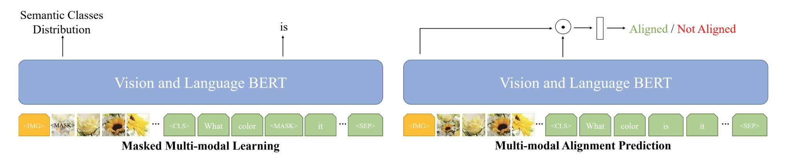
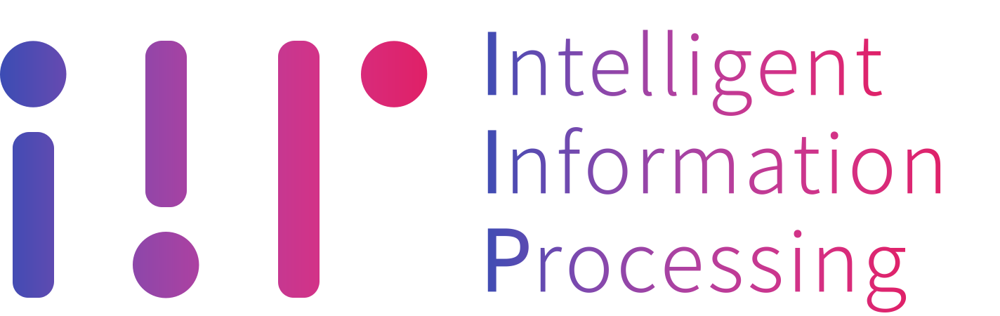
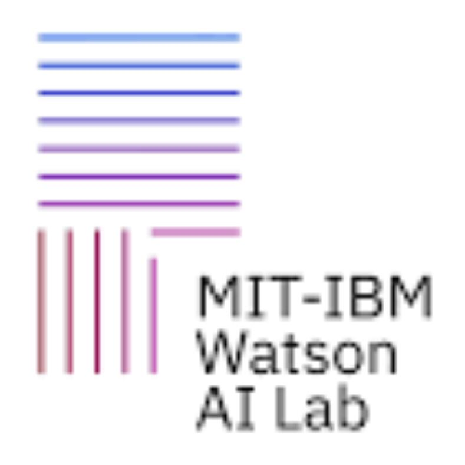
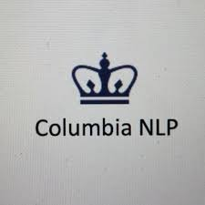

Riverside Park, New York, NY, 2023 Fall
My name is Rui Sun (Rui is pronounced as Ray). I received my bachelor's degree from Xidian University.
Then, I received my master's degree from Columbia University (Research Specialization, Advisor: Prof. Shih-Fu Chang).
My research interests are Vision-Language Multimodal Learning, Computer Vision, and Natural Language Processing.
I am fortunate enough to work with brilliant mentors and advisors. You can find my work experience and their names in Experience section.
Multimodal Learning is a broad topic, if you would like to know more about what I am doing and what I did, please jump to Publication or Experience section.
[GitHub]
[LinkedIn]
[Semantic Scholar]
[Twitter]
[Email]
I maintain a list of Multimodal Learning papers HERE. Let's dive into Multimodal Learning together.
I am actively looking for PhD opportunities(24 Fall) and Research Interns(24 Spring and 24 Summer). If you believe I can be a good fit, please Email me to let me know. Thanks~

GENOME: Generative Neuro-Symbolic Visual Reasoning by Growing and Reusing Modules
In submission
Zhenfang Chen*, Rui Sun*, Wenjun Liu*, Yining Hong, Chuang Gan
[Project Page][Video Demo][Paper][Code]
IdealGPT: Iteratively Decomposing Vision and Language Reasoning via Large Language Models
Findings of EMNLP 2023 (long)
Haoxuan You*, Rui Sun*, Zhecan Wang*, Long Chen, Gengyu Wang, Hammad A. Ayyubi, Kai-Wei Chang, Shih-Fu Chang
[Paper][Code]

UniFine: A Unified and Fine-grained Approach for Zero-shot Vision-Language Understanding
Findings of ACL 2023 (long)
Rui Sun*, Zhecan Wang*, Haoxuan You*, Noel Codella, Kai-Wei Chang, Shih-Fu Chang
[Paper][Code]

Find Someone Who: Visual Commonsense Understanding in Human-Centric Grounding
Findings of EMNLP 2022 (long)
Haoxuan You, Rui Sun, Zhecan Wang, Kai-Wei Chang, Shih-Fu Chang
[Paper][Code]
Technical Report

An empirical study of QA-oriented pretraining
Rui Sun
[GitHub Repo]
Columbia NLP, Research Assistant
Advisor: Prof. Zhou Yu, Sep 2023 -- Present
Currently working on Multimodal Dialog System, Fine-Grained Visual Categorization (FGVC), and Model Editing
MIT-IBM Watson AI Lab, Research Assistant
Advisor: Dr. Zhenfang Chen, Prof. Chuang Gan, Jun 2023 -- Present
Neuro-Symbolic Visual Reasoning (One co-first author paper in submission)
Digital Video and Multimedia (DVMM) Lab, Columbia University, Research Assistant
Advisor: Haoxuan You, Zhecan Wang, Prof. Shih-Fu Chang, Prof. Kai-Wei Chang, Oct 2021 -- Jun 2023, Oct 2023 -- Present
General Vision and Language Understanding Evaluation (Co-authored work will be released soon)
Large Language Model Aided Visual Reasoning (Findings of EMNLP 2023)
Zero-shot Vision-Language Understanding (Findings of ACL 2023)
Human-centric Visual Commonsense Grounding Dataset (Findings of EMNLP 2022)
Task-oriented Pretraining (Second-stage Pretraining) of Vision-Language Pretrained Models (Technical Report)
Rehab Engineering Alliance & Center Transforming Low Vision, NYU Langone Health, Research Assistant
Advisor: Prof. JohnRoss Rizzo, Prof. Zhou Yu, Jun 2023 -- Aug 2023
AI for Social Good: Deploy Vision-Language & Large Language Models in wearable devices for Blindness and Low Vision People (More details can be found in this page)
Intelligent Information Processing (IIP) Lab, Xidian University, Research Assistant
Advisor: Prof. Jingwei Xin, Prof. Nannan Wang, Sep 2020 -- Jul 2021
Human Face Frontalization and Hallucination (More details can be found in this paper)
  
Interdisciplinary Contest in Modeling (ICM), Meritorious Winner, 2018
Conference Reviewer
EMNLP 2023, AAAI 2024, ACL Rolling Review (ARR)
Teaching Assistant at Columbia
COMS 4995 Deep Learning for Computer Vision, working with Prof. Peter Belhumeur, Fall 2023
ELEN 4815 Random Signals and Noise, worked with Prof. Irving Kalet, Spring 2023
COMS 4995 Neural Networks & Deep Learning, worked with Prof. Richard Zemel, Fall 2022
COMS 4732 Computer Vision II, worked with Prof. Carl Vondrick, Spring 2022
Riverside Park, New York, NY, 2023 Fall